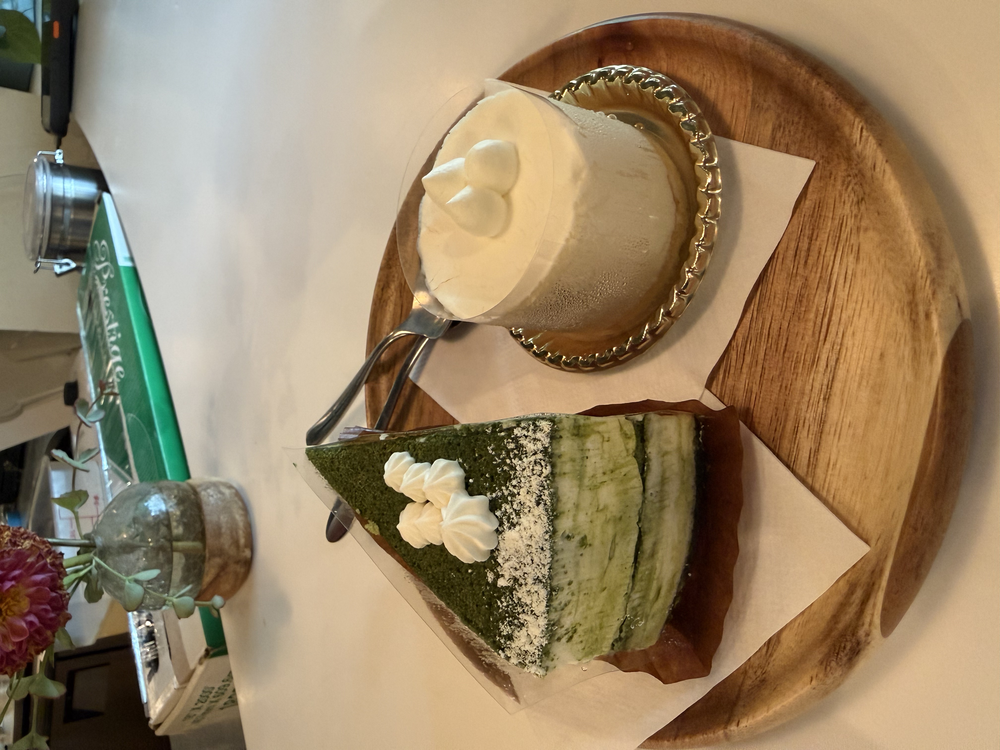

Coffee Shop
PPL is my favorite coffee shop in Williamsburg where they serve coffee, matcha and hojicha Latte, as well as traditional Japanese tea. The shop has cute interior design with plants, and a wooden bench to sit on.
Both my friend and I ordered an iced hojicha latte and sat on the bench for a while to enjoy the drink. It was raining outside so we waited inside until the rain stopped.
Hojicha Latte is a smooth, creamy drink made from roasted Japanese green tea powder, hot water, and milk. Unlike matcha, hojicha is low in caffeine and has an earthy flavor.
How to Make a Hojicha Latte
Here is a recipe video that teaches you to try making a hojicha latte at home.
Dessert Shop

After leaving the coffee shop, we wandered into a dessert shop called Patisserie Tomoko. The display case was filled with different cakes and cookies.
We ordered a Yuzu cake and a Matcha Tiramisu.
The Yuzu cake is light and fluffly with a strong Yuzu flavor.
The Matcha Tiramisu has a layered flavor and the inner layer has a similar texture as icecream.
My favorite of the two was the Yuzu cake for its lightness and freshness.